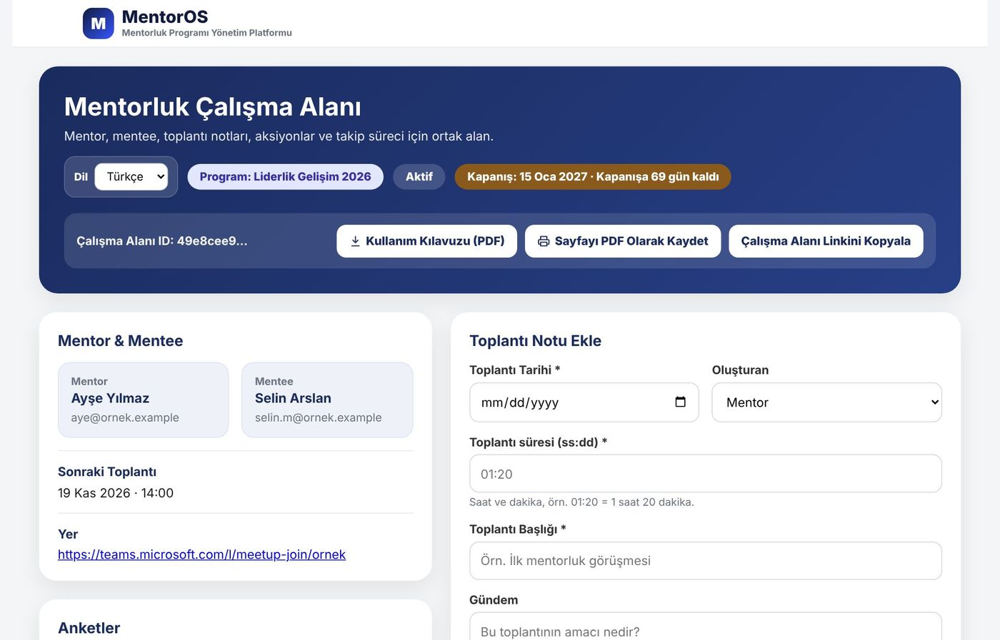
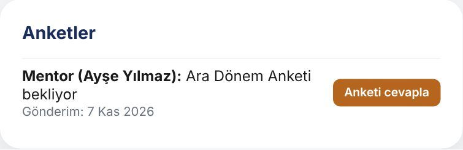
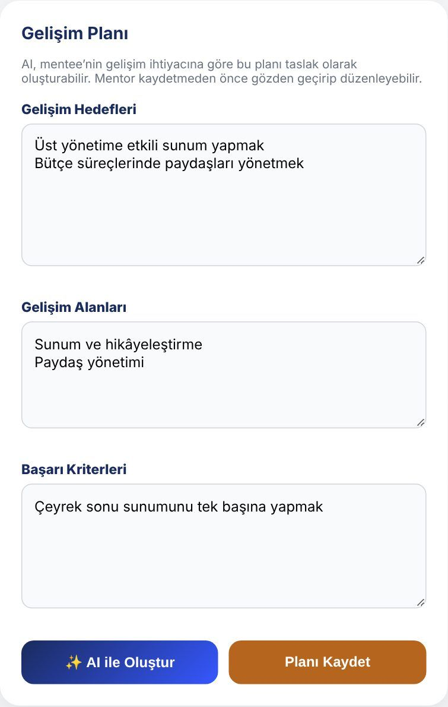
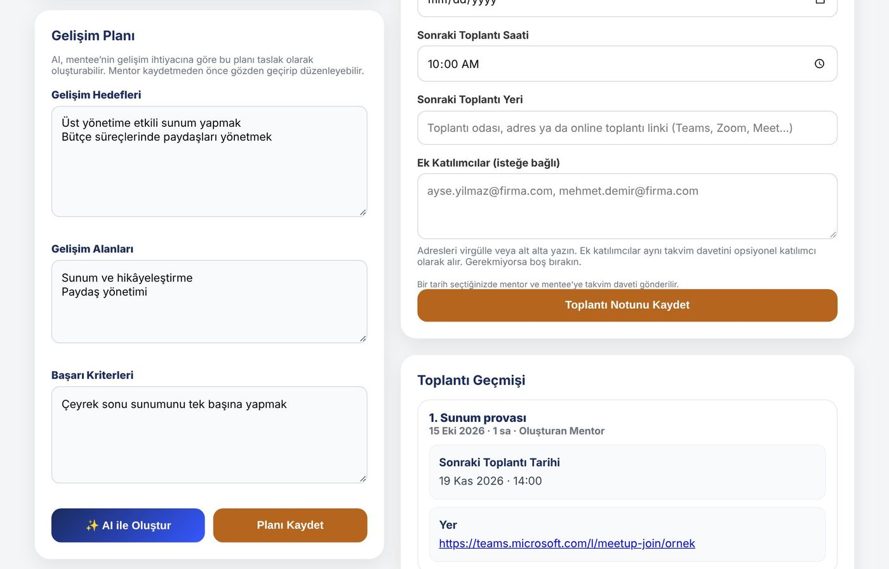

Çalışma sayfası mentor ve mentee'nin ortak sayfasıdır. Hedeflerinizi, toplantılarınızı ve planınızı burada tutarsınız.
1. Sayfayı açmak
Eşleşme e-postasındaki size özel bağlantıya tıklayın; giriş ya da şifre gerekmez. Mentor ve mentee aynı sayfada çalışır, ama herkesin bağlantısı kendinedir.
Bağlantıyı kaybetmemek için Çalışma Alanı Linkini Kopyala'ya basıp saklayın; başkalarıyla paylaşmayın.
Üstteki mavi alanda program, durum ve kapanış tarihi ile kapanışa kalan gün görünür. Kapanış tarihinde sayfa kapanır; içeriği okunabilir kalır.
Sayfayı PDF Olarak Kaydet gelişim planını ve toplantı geçmişini kaydeder.
Ne yapacağınızı merak ederseniz Mentorluk Rehberi'ni açın.

2. Anketler
İK'nın gönderdiği ve henüz yanıtlanmamış anketler burada gönderim tarihiyle listelenir (ara dönem ve kapanış anketleri).
Kendi anketinizin yanında Anketi cevapla düğmesi vardır; basınca anket açılır.
Karşı tarafın anketini yalnızca durum olarak görürsünüz; onu açamaz ve cevaplayamazsınız.
Cevaplarınızı yalnızca İnsan Kaynakları görür. Yanıtlanan anket listeden kalkar.

3. Gelişim planı
Mentorluğun neye ulaşmak istediğini birlikte yazın.
Gelişim Hedefleri, Gelişim Alanları ve Başarı Kriterleri'ni doldurun.
İsterseniz AI ile Oluştur ile taslak alın (firmanızda açıksa), sonra düzenleyin.
Planı Kaydet'e basın.
AI'ya isminiz, e-postanız ve toplantı notlarınız gönderilmez; yalnızca gelişim ihtiyacı gibi bilgiler, içindeki isimler gizlenerek gider. AI'nın taslağını mutlaka gözden geçirin.

4. Toplantı notu
Her görüşmeden sonra kısa bir not girin.
Toplantı Notu Ekle'de tarihi, süreyi (örn. 01:00) ve başlığı yazın; bu üçü zorunludur. Oluşturan alanı bağlantınıza göre kendiliğinden dolar.
İsterseniz gündemi, konuşulanları ve aksiyon maddelerini ekleyin.
Sonraki Toplantı Tarihi, saati ve Sonraki Toplantı Yeri'ni girin: toplantı odası, adres ya da online toplantı linki (Teams, Zoom, Meet…). Link tıklanabilir görünür.
Toplantı Notunu Kaydet'e basın. Tarih seçtiyseniz ikinize de takvim daveti gider; yer bilgisi davetin Konum alanına yazılır.
Not Toplantı Geçmişi'nde görünür. İK yalnızca toplantının tarihini ve süresini görür; notların içeriğini görmez.

5. Mentorun uygun zamanları
Mentor, toplantı için uygun olduğu saatleri işaretler; mentee buna bakarak gün seçer.
Mentorun Uygun Olduğu Zamanlar kutusunu + ile açın.
Haftalık tekrar: her hafta aynı olan saatler. Takvim: yalnızca belirli bir gün için saatler.